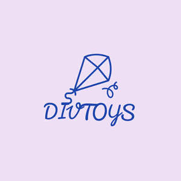

Trade Mark Journal No.2025/016 18 April 2025
UK00004170145 7 March 2025 (28)

- Class 28
- Toys; Toys, games, and playthings; Toys and playthings for pets; Ride-on toys; Cuddly toys; Puzzles [toys]; Toys for sandpits; Plush toys; Stuffed toys; Toys for babies; Inflatable toys; Noisemakers [toys]; Toys for pets; Wind-up toys; Fidget toys; Toys for use in perambulators; Radio-controlled toys; Plastic toys; Scooters [toys]; Crib toys; Toys for animals; Mobiles [toys]; Toys, games and playthings for pet animals; Pet toys; Windup toys; Rattles [toys]; Toys for cats; Toys for infants; Model cars [toys or playthings]; Wooden toys; Toys and playthings for pet animals; Toys for dogs; Toy dolls; Educational toys; Bendable toys; Toy playsets; Outdoor toys; Models being toys; Bath toys; Infant toys; Dog toys; Sandbox toys; Bathtub toys; Electronic toys; Action figures [toys or playthings]; Inflatable ride-on toys; Whistles [toys]; Sand toys; Soft toys; Miniature car models [toys or playthings]; Controllers for toys; Bouncing toys; Drones [toys]; Cloth toys; Musical toys; Tricycles for infants [toys]; Toy figurines; Play mats for use with toy vehicles [playthings]; Toy furniture; Toys for birds; Mechanical toys; Wheeled toys; Clockwork toys; Developmental toys; Crib mobiles [toys]; Fluffy toys; Plastic toys for use in the bath; Stuffed animals [toys]; Inflatable bath toys; Stacking toys; Fabric toys; Rocking toys; Modular toys; Water toys; Plastic models being toys; Model toys; Play mats incorporating infant toys [playthings]; Whack-a-mole toys for pets; Toy prams; Drawing toys; Action toys; Stuffed and plush toys; Stuffed plush toys; Plush stuffed toys; Battery-operated action toys; Sketching toys; Children's toys; Squeezable squeaking toys; Toy bicycles; Smart toys; Whistling toys; Plastic character toys; Toy tableware; Construction toys; Clockwork toys [of plastics]; Push toys; Articles of clothing for toys; Toy wheelbarrows; Talking toys; Squeeze toys; Toy bakeware and toy cookware; Bendy balls being toys; Toy mobiles; Toy xylophones; Clothing for toy figures; Toy animals; Chewing toys for parrots; Toy cars; Stuffed bean-filled toys; Pull toys; Toy strollers; Assembly toys; Water-squirting toys; Toys for pet animals; Toy balloons; Intelligent toys; Toy scooters; Music box toys; Toy hats; Punching toys; Toy harmonicas; Toy cookware; Toy automobiles; Smart plush toys; Toy tools; Toy robots; Toy weapons; Toys in the form of puzzles; Xylophones being musical toys; Novelty toys for parties; Toy glockenspiels; Soft sculpture toys; Inflatable pool toys; Costumes being childrens playthings; Toy bakeware; Toy pushchairs; Puzzle mats [toys]; Toy balls; Money guns being toys; Toy vehicles; Toy airplanes; Playthings; Board games; Boards games; Sugoroku board games; Electronic board games; Compendiums of board games; Game boards for trading card games; Question sets for board games; Games; Backgammon games; Chess games; Checkers [games]; Checkers games; Arcade games; Dart games; Cards [games]; Tabletop basketball games; Cribbage boards; Pinball games; Dice games; Card games; Chess boards; Games consoles; Interactive gaming chairs for video games; Joysticks for video games; Low-friction game tables for playing hockey games; Table-top games; Mah-jongg games; Marbles for games; Games (Marbles for -); Party games; Sports games; Parlor games; Hockey games; Miniatures for use in games; Draughts [games]; Tabletop games and gambling devices; Marbles for playing games; Korean board games (Yut Nori sets); Skittles [games]; Game consoles; Balls for games; Games (Balls for -); Controllers for computer games; Hand-held consoles for playing video games; Trading cards for games; Paddle ball games; Balls for playing games; Building games; Boule games; Bowls [games]; Dart board cabinets; Parlour games; Game cards; Electronic dart games; Electronic games; Scratch cards for playing lottery games; Video game apparatus, arcade games, and amusement machines ; Video game consoles; Video game joysticks; Trading card games; Counters for games; Hand held units for playing video games; Bingo game playing equipment; Coin-operated games; Chinese chess as games; Playing cards and card games; Memory games; Computer game consoles; Paddles for playing hockey on game tables; Quiz games; Bats for games; Shogi boards; Arcade basketball shooting games; Pinball games machines [toys]; Controllers for game consoles; Chinese checkers [games]; Chinese checkers games; Chinese checkers as games; Computer game joysticks ; Go games; Games (Apparatus for -); Apparatus for games; Hand-held pinball games; Balls for playing boules games; Joysticks being parts of video game consoles; Dart board overlays; Joysticks for video game machines; Musical games; Equipment sold as a unit for playing card games; Billiard game playing equipment; Arcade video game machines; Nets for ball games.
Divya Enterprises Limited